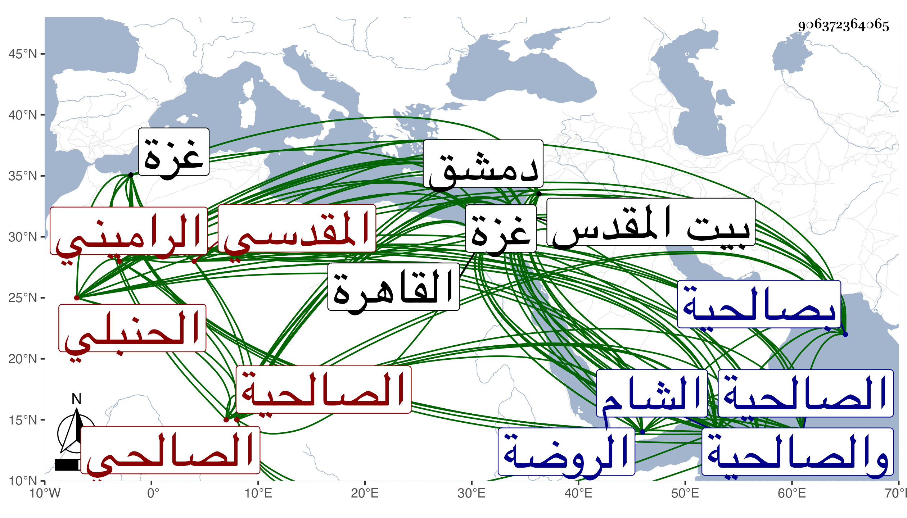

0902Sakhawi.DawLamic.ITO20230111-ara1.EIS1600.906372364065
Biography ID: 906372364065
222
عمر بن إبراهيم بن محمد بن مفلح بن محمد بن مفرح بن عبد الله النظام أبو حفص بن التقي أبي إسماعيل بن شيخ المذهب الشمس أبي عبد الله الراميني المقدسي الصالحي الحنبلي أخو الصدر أبي بكر الآتي وأبوهما ويعرف كسلفه بابن مفلح . ولد في سنة إحدى أو اثنتين وثمانين وسبعمائة بصالحية دمشق ونشأ بها فقرأ القرآن عند الشمس بن الأستاذ وأحمد البقعي وحفظ الزهد والجواهر كلاهما من تصنيف أبيه والحاجبية وغيرها وتفقه بوالده وعمه الشرف عبد الله وغيرهما وعنهما أخذ الأصول وقرأ في العربية على الشرف الأنطاكي والشمس الهروي والشهاب الفندقي ودخل القاهرة قديما فحضر بها عند السراج البلقيني والصدر المناوي والولي بن خلدون وطائفة وسمع الحديث على المحب الصامت والشهاب المرداوي وناصر الدين محمد بن داود بن حمزة وغيرهم ، وناب في القضاء عن أبيه في سنة إحدى وثمانمائة بدمشق وعن المجد سالم بالقاهرة ثم استقل بقضاء غزة في سنة خمس وثمانمائة وكان أول حنبلي ولي بها كما بلغني عنه ثم استقل به أيضا بالشام في شعبان سنة ثلاث وثلاثين في حياة عمه مع حرصه هو كان عليه فما تم له وعزل عنه مرارا بالعز عبد العزيز بن علي البغدادي الماضي ثم زهد فيه حين صرفه بحفيد عمه البرهان الماضي وأذن لابن أخيه العلاء الماضي في السعي عليه وأراحه الله منه ، وقد حج مرارا آخرها قريب الخمسين وزار بيت المقدس وابتنى بجوار منزله من الصالحية مدرسة لطيفة ورزق في ميراثه من النساء حظا ، وباشر عدة تداريس ومشيخات وغير ذلك وعقد مجلس الوعظ في كثير من البلاد كمصر والشام ، بل وحدث بهما وببيت المقدس وغيره ، أخذ عنه الفضلاء والأئمة ، أكثرت عنه حين لقيته بالقاهرة والصالحية ، وكان خيرا ساكنا واعظا مستحضرا لما يلائم الوعظ مع مشاركة في الفقه ونحوه وحرص على العبادة والتهجد وصبر على الطلبة ، وهو ممن كان لشيخنا به مزيد عناية بحيث أنزله بجواره في بعض قدماته . مات في ربيع الآخر سنة اثنتين وسبعين ودفن في الروضة بسفح قاسيون عند أسلافه مع والده وهو خاتمة أصحاب المحب الصامت بالسماع رحمه الله وإيانا .
